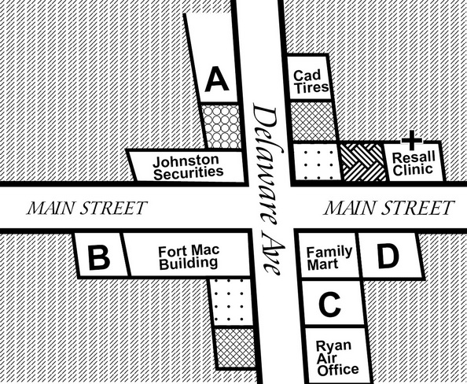

Questions 1 through 3 refer to the following conversation: 00:00 00:00 00:30 |
| W: Where are you headed today, sir? M: Buenos Aires. W: How many pieces of check-in luggage? M: None. W: I'm afraid you can't carry that tripod on the plane. You'll have to check it in. M: Really? But it's not very big. W: It's not due to size. They are on the list of restricted items because they could be used as a weapon. M: I don't want it to get damaged though. W: I'll put a fragile sticker on it. Don't worry. We check them through all the time. 女： 先生您今天要飛哪裡？ 男： 布宜諾艾利斯 。 女： 有幾件行李要托運？ 男： 沒有。 女： 恐怕你不能把那個三腳架帶上飛機。你得托運。 男： 真的嗎？可是它不是很大。 女： 不是因為大小的關係。它列在禁止項目的清單上，因為可以被拿來當成武器。 男： 可是我不想要它被弄壞了。 女： 我會在上面貼一張易碎物品的貼紙。別擔心。我們經常托運易碎物品。 |
Questions 4 through 6 refer to the following conversation: Steps for Termination of Employment
00:00 00:00 00:37 |
||||||||||
| M: I can't believe it. My time is up with this company. W: What do you mean? Are you getting fired? M: Yes. W: But your PIP period isn't even finished yet. You still have a chance! M: Nope. My manager hinted to me that there's no way I'm going to make it. My numbers are still way too low. I bet he has already drafted my notification of termination. W: Wow. I'm sorry to hear that. What did you say to him? M: Not much. I'm going to save all my thoughts for the exit interview. Then I'm really going to speak my mind and give him an earful! 男：我真不敢相信。 我在這家公司的大限已到。 女：你是什麼意思？你要被解雇了嗎？ 男：是的。 女：但你的績效提高計劃期限還沒到。 你還有機會！ 男：不。 我的經理暗示我是不可能完成的。 我的數字仍然太低。 我敢說他已經在草擬解雇通知了。 女：哇。 我很遺憾聽到這個消息。 你跟他說了什麼？ 男：不多。 我要等離職面談時再說。 然後我會真正告訴他我的想法且臭罵他一頓！ 終止就職的步驟
|
Questions 7 through 9 refer to the following conversation:
00:00 00:00 00:51 |
|
| M: Dale Watkins, HTM Building. Do you know the extension number of the person you are trying to reach? W: Yes, it's 445. M: Hmm…I'm sorry. It looks like that extension number doesn't exist. Do you know the person's name? W: It's been a while since I called. Perhaps the number has changed. It's Mr. Chien. But I'm afraid I don't recall his first name. M: Let me see. I have two Mr. Chien's listed as working in the building here. One is a Mr. Bradley Chien, a physiologist. Another is Mr. Rui-He Chien, an orthopedic surgeon. W: Honestly, neither of those sounds right. He's an infant pediatrician. M: Oh! You are talking about Mr. Honda Chien. I believe he retired last year. 男：Dale Watkins，HTM大樓。 您知道您想聯繫哪個分機號碼嗎？ 女：是的，是445。 男：嗯...抱歉。 看來這分機號碼不存在。 你知道那個人的名字嗎？ 女：我很久沒打電話來了， 也許號碼改了。 是秦先生。 但恐怕我不記得他的名字。 男：讓我看看。 我這邊顯示有兩位秦先生在這棟大樓工作。 一個是生理學家Bradley。 另一個是整形外科醫生琴瑞河先生。 女：老實說，聽來這些都不是。 他是一名嬰幼兒科醫生。 男：哦！ 你在說Honda秦先生。 我想他去年退休了。
|
Questions 10 through 12 refer to the following conversation: 00:00 00:00 00:34 |
| W: Hi. What's the cover charge tonight? M: Five bucks. But there's free cover before midnight if you check in on Facebook. W: How do I do that? M: Just find our page and you'll see the option to check in. W: Do I have to include a comment? M: Only if you want to. W: Ok, done. Here, look. M: Looks fine. Here, just let me stamp your hand. Last call is at 2 AM, and doors close at 3. Bar is on the left, dance floor in the middle, and coat check on the right. Have a good night. 女： 嗨。今晚服務費是多少？ 男： 五塊錢。可是如果你在臉書打卡可以免費。 女： 要怎麼做？ 男： 找到我們的網頁然後你就會看到打卡的選項。 女： 我得要留言嗎？ 男： 隨意。 女： 好, 完成。拿去，你看一下。 男： 看起來沒問題。我幫你在手上蓋章。最後一輪點酒時間是凌晨兩點，三點打烊。吧台在左邊，舞池在中間，衣帽間在右邊。祝妳有個愉快的夜晚。 |
Questions 13 through 15 refer to the following conversation: 00:00 00:00 00:29 |
| M: What do you want to see tonight? W: That romantic comedy we got last time was awful. How about this documentary on whales? It got really good reviews. M: Sure. Look, the poster says we can get another new release for 50% off. W: Yeah, but don't forget they are due back tomorrow. Are we really going to watch two tonight? It's already after 9. M: Good point. OK. Forget it. But I'm getting microwave popcorn. 男： 你今晚想看什麼？ 女： 我們上次看的那部浪漫喜劇片糟透了。這部鯨魚的紀錄片如何？它頗受好評。 男： 好。你看，海報上說我們看另一部新片可以打五折。 女： 沒錯，可是別忘了那期限是明天要還。你今晚真的打算看兩片嗎？現在已經過了九點。 男： 有道理。好，那就算了。但我要買微波爆米花。 |
Questions 16 through 18 refer to the following conversation: 00:00 00:00 00:34 |
| W: Wait a minute! What are you doing? M: I'm writing up a ticket for this car. W: Please don't! I only had to stop for a minute to drop my mother off. M: Sorry, ma'am, but this space is for emergency vehicles only. No exceptions. W: Is there anything I could do to make you change your mind? I can't get another ticket or I'll lose my license. M: No. W: How about one hundred dollars, right now. M: Bribing a police officer is a serious offense, ma'am. Would you like to be arrested right now? W: How about two hundred? 女： 等一下！你在做什麼？ 男： 我正在給這部車開罰單。 女： 拜託不要！我只是要停一會讓我媽媽下車。 男： 抱歉，小姐，可是這個地方只可以停緊急用車輛。沒有例外。 女： 我可以做什麼事來讓你改變主意嗎？我不能再吃罰單了，不然我會被吊銷執照。 男： 沒有。 女： 一百美金怎麼樣，現在給你。 男： 行賄警察是重罪，小姐。你想被立刻逮捕嗎？ 女： 兩百呢？ |
Questions 19 through 21 refer to the following conversation: 00:00 00:00 00:33 |
| W: Do you know where all the invoices from September are? M: I put them right here in this cardboard box yesterday. They seem to have disappeared. W: What? Do you know what this box is for? M: Um… W: Read the side of it. M: It says, "Documents to be shredded." W: Exactly. M: So that means they've all been shredded? W: Obviously. M: I'm sorry, Doris. W: I don't want any more apologies. Pack up your things. You're out of here. 女： 你知道所有九月份的收據放在哪裡嗎？ 男： 我昨天把它放在這裡的紙盒裡。看起來是不見了。 女： 什麼？你知道這個盒子是做什麼用的嗎？ 男： 嗯… 女： 你唸一下旁邊的字。 男： 上面說，"待絞碎文件"。 女： 一點也沒錯。 男： 所以這意思是它已經全部都被絞碎了？ 女： 顯然如此。 男： 我很抱歉，Doris。 女： 我不想再聽到任何道歉了。把你的東西收一收。你被開除了。 |
Questions 22 through 24 refer to the following conversation:  00:00 00:00 01:10 |
| W: When are you available to come have a look at the office space I mentioned? M: This week my schedule is totally full. How about Monday morning next week? W: It seems we have the opposite schedule. I've got several gaps in my schedule this week, but I am booked solid next week. M: So what can we do? We don't want to delay this too long. We were hoping to start moving our things into the space as soon as possible. W: Would you be willing to go have a look at the space yourself? I could leave the key with the guard downstairs. M: Sure, why not? W: Great. You already have the address, right? M: Yes. Beside the Fort Mac Building, right? W: No. It's a little tricky to find. Even though the address is on Main Street, the entrance to the building is not actually on Main, but around the corner on Delaware Ave and across the street from the Fort Mac building, just before the Ryan Air office. M: Got it. Thanks for the tip. 女：你什麼時候有空來看我提過的辦公室？ 男：這週我的行程已滿。 下周一早上如何？ 女：看來我們的行程表相反。我本週的行程有幾個空檔，但我下週滿檔。 男：那該怎麼辦？ 我們不想拖太久，我們希望盡快開始把東西搬進辦公室。 女：你願意自己去看嗎？ 我可以把鑰匙留給樓下的警衛。 男：當然可以啊。 女：太好了。 你已經有地址了對吧？ 男：是的。 在福特邁可大廈旁邊，對吧？ 女：不，有點不好找。 雖然地址是在主要街道上，實際大樓入口處不在那，是在特拉華大道的拐角處，福特邁可大廈對面，就在銳安航空辦公室之前。 男：知道了。 謝謝你的提醒。 |
Questions 25 through 27 refer to the following conversation: 00:00 00:00 00:40 |
| W: Have you and your wife chosen the color for the bathroom yet? M: We are going for an ocean theme, so we'd like blue. W: Sure. Here is a palette showing all the blues we offer. M: OK. Wow. It's kind of hard to decide. W: Maybe you should wait and let your wife decide. M: No, she's even more indecisive than me. W: Let me give you some advice. You want to go as light as possible. All of these colors are going to look much darker when they are covering all the walls. M: Good to know. I'll take the blue on the bottom of this row then. 女：你和你太太選好浴室的顏色了嗎？ 男：我們喜歡海洋主題，所以我們要藍色。 女：沒問題。這個調色板上有我們現有全部的藍色。 男：好。哇，有點難決定。 女：或許你應該等一下讓你的太太決定。 男：不，她甚至比我更優柔寡斷。 女：我來給你一些建議吧。你想要顏色盡可能淡的。當這些顏色塗滿全部的牆壁後，他們看起來會更暗。 男：多長一智。那我挑這一列最底部的藍色。 |
Questions 28 through 30 refer to the following conversation: 00:00 00:00 00:36 |
| W: How's next Tuesday at three in the afternoon for you? M: No can do. I've got an English class scheduled at that time. W: Is it possible for you to postpone your class? This teleconference is quite important and can't be rescheduled yet again. M: I guess so. W: And think about this: the teleconference will be mostly in English, so you'll get some speaking and listening practice anyway. M: But those Russians have such thick English accents. I can barely understand them. W: Precisely. That's a true test of your ability! 女：下禮拜三下午你可以嗎？ 男： 沒辦法。我有一堂英文課已經排在那個時間了。 女： 你的課有可能可以延期嗎？這個電話會議十分重要，不能再改期了。 男： 我想是的。 女： 而且你想想看：這個電話會議會多半用英語進行，所以你至少可以練習一下說跟聽。 男： 可是這些俄羅斯人的英語有很重的口音。我幾乎聽不懂他們說什麼。 女： 一點也沒錯。那對你的能力是個真正的考驗！ |
Questions 31 through 33 refer to the following conversation: 00:00 00:00 00:31 |
| M: Anita, could you please change the CD. W: Sure. Why? M: This music is not really appropriate. W: I actually chose this music because I thought it makes good background noise for shoppers. M: I do like it. But head office says we can only play classical. W: Seriously? How come? M: According to them, people feel classier when they hear classical music, making them more willing to spend money. W: Hm. I somehow doubt that's true. 男：Anita，能不能請你換一下CD。 女：當然。怎麼了？ 男：這個音樂並不是十分合適。 女：我選這個音樂是因為我以為它對購物的人來說是個好背景噪音。 男：我確實喜歡。可是總公司說我們只能播古典樂。 女：真的嗎？為什麼呢？ 男：據他們的說法，當人們聽到古典樂時他們會覺得更高貴，使他們更願意花錢。 女：嗯。不知怎麼的，我懷疑那是真的。 |
Questions 34 through 36 refer to the following conversation: 00:00 00:00 00:48 |
| W: I'm pretty sure the supreme nachos were 11.99 on the menu. But here is says 13.99. M: Oh, that's because you asked for extra sour cream, which is a two-dollar surcharge. W: Oh! I forgot about that. And one more thing. I thought you guys only added a 10% service charge? M: No, that was increased to 15% last March. M2: Could we have that removed? M: Was there something wrong with your service today? M2: In fact, yes. Our appetizers took over 30 minutes and were overcooked. My steak was chewy, and my son never got the extra napkins that he asked for three times. 女： 我很確定菜單上至尊玉米片是11.99元。可是這裡說是13.99元。 男： 喔，那是因為你加點了酸奶油，多收兩美金。 女： 喔！我忘了這點。還有一件事。我以為你們只加收一成服務費？ 男： 不是，去年三月就調漲成15%了。 男2：我們可以刪除這部分嗎？ 男： 今天的服務有什麼問題嗎？ 男2： 其實是的。我們的開胃菜花了30分鐘才送來，而且煮過頭了。我的牛排很難嚼，還有我兒子要了三次額外的餐巾他都沒有拿到。 |
Questions 37 through 39 refer to the following conversation: 00:00 00:00 00:34 |
| W: Corban, is the blueprint for the proposed wing ready yet? M: Not quite. I still need to make a few adjustments. W: But you told me it was basically finished last week. M: True, but in this morning's meeting with the board of directors, I was informed that they want closets in all of the patient's rooms. I have to make several changes as a result. W: Sorry, I wasn't aware of that. So how much more time do you need? M: Two…three…no, make it four hours. 女： Corban，那個廂房提案的設計圖準備好了嗎？ 男： 不完全好。我還需要做些微調整。 女： 可是你上禮拜告訴我它基本上完成了。 男： 沒錯，但是在今天早上的董事會，我被告知說他們想要所有的病房內都有衣櫥。因此我得做幾個變更。 女： 抱歉，我不知道這件事。那麼你還需要多多少時間？ 男： 兩…三…不，算四個小時好了。 |